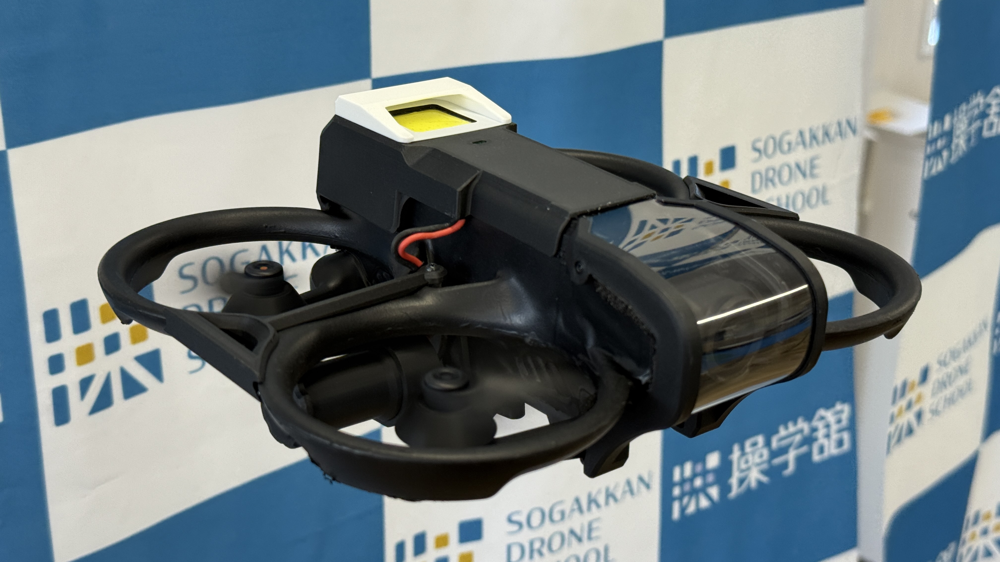
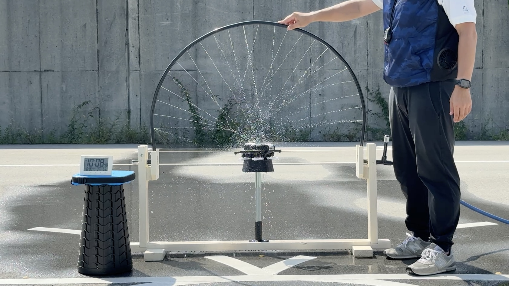

課題説明
災害地での雨天や屋内の漏水・結露環境など天候や場所を問わず飛行が求められる状況で防水機体による安定した飛行を行う必要がある。
機体概要
デフォルト装備機体をベースに防水処理を施行しIPX2相当の防水性能を備えたモデル。災害現場での点検や探索飛行対応を想定。なお、本機体はWRS2025 TeamSogakknが設計・制作しました。
ギャラリー


実装概要
- 防水コーティング：機体全体にラバーコーティングを施しボディの隙間からの浸水を防止
- 防滴カバー：モーター上部と開口部を覆い上方向からの水滴侵入を防止
- 照明：密閉型カバー付きLEDを搭載し暗所での視認性を確保
防水試験条件
散水条件
- 方法：上方からのシャワー噴霧（参考規格：IPX3）
- 時間：合計10分以上
- 角度：鉛直から±60°以内
- 流量：2850mℓ／分
※IPX3の試験方法を参考に実施したが、規定の流量を再現できなかったため、本試験の防水性能評価はIPX2相当として扱う
仕様
- 防水レベル：IPX2相当
- 重量：総重量337.5g（ノーマル機体）＋99.2g（照明 プロペラガード バッテリーケースを含む）
設計上の工夫
- 防水カバー：カメラ周辺の開口部は大きく水の侵入経路となる最も重要なポイントであった 一方でカメラの視認性も確保する必要があったため 高い耐衝撃性 透明度 加工性を併せ持つポリカーボネート素材を採用 これにより防水カバーを装着しても十分な視認性を維持することができた
- 保守性：防水コーティングが部分的に欠損 損傷した場合でも該当箇所のみを補修可能な施工方式とすることでメンテナンス性を大幅に向上させた